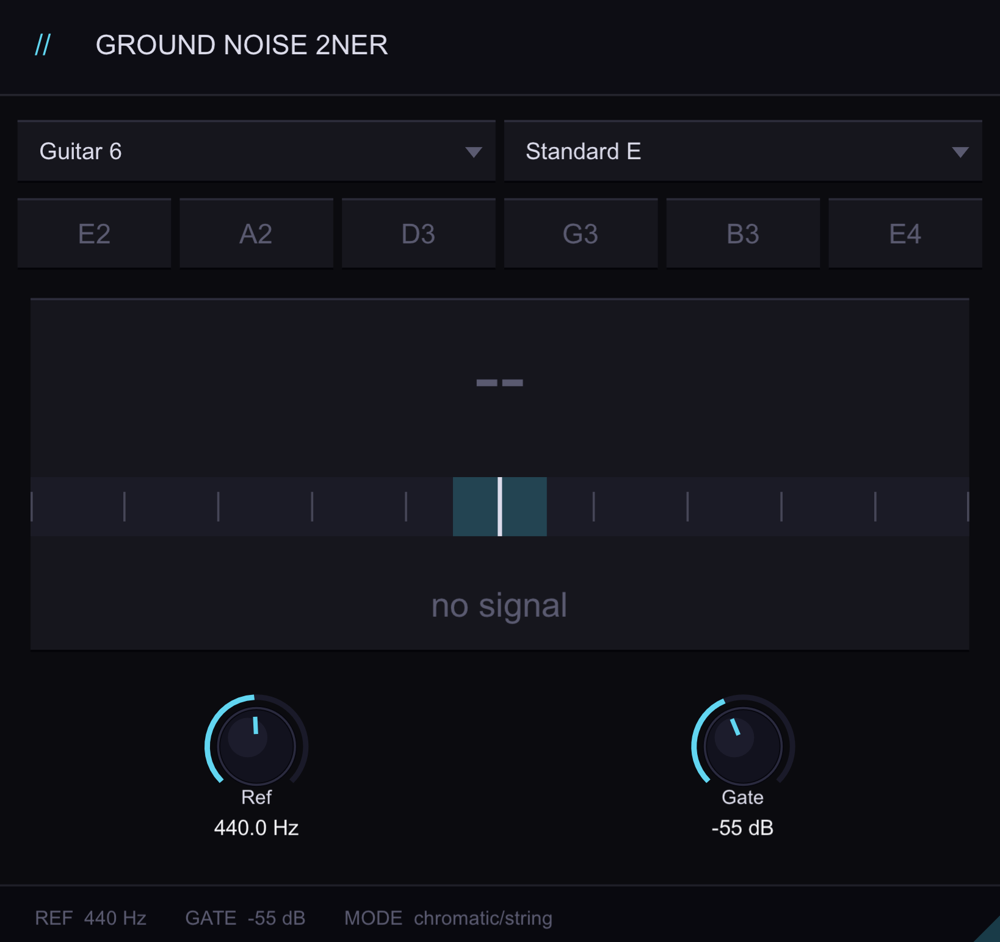

Ground Noise Audio
TUNER PLUGIN / MULTIPLE TUNINGS
Simple tuning.
2NER gives you a clear pitch readout with support for multiple tunings.

Features
- Tune in real time
- Choose from multiple tunings
- See note and cents clearly
- Double-click any note to hear it
- Mute the input while tuning
- Built for guitar and bass
- Uses minimal CPU